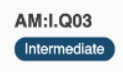

Ransomware Readiness Tutorial
Ransomware is an ever-evolving form of malware designed to encrypt files on a device, rendering any files and the systems that rely on them unusable. Malicious actors then demand ransom in exchange for decryption. Ransomware actors often target and threaten to sell or leak exfiltrated data or authentication information if the ransom is not paid. In recent years, ransomware incidents have become increasingly prevalent among the Nation’s state, local, tribal, and territorial (SLTT) government entities and critical infrastructure organizations.
Malicious actors continue to adjust and evolve their ransomware tactics over time, and CISA analysts remain vigilant in maintaining awareness of ransomware attacks and associated tactics, techniques, and procedures across the country and around the world.
This Ransomware Readiness Assessment (RRA) will help you understand your cybersecurity posture with respect to the ever-evolving threat of ransomware. The RRA also provides a clear path for improvement, and contains an evolving progression of questions tiered by the categories of basic, intermediate, and advanced. This is intended to help an organization improve by focusing on the basics first, and then progressing by implementing practices through the intermediate and advanced categories.
Looking to learn more about this growing cyber threat?
The NEW Ransomware Guide is a great place to start. The Guide, released in September 2020, represents a joint effort between CISA and the Multi-State Information Sharing and Analysis Center (MS-ISAC). The joint Ransomware Guide includes industry best practices and a response checklist that can serve as a ransomware-specific addendum to organization cyber incident response plans.
In January 2021, CISA unveiled the Reduce the Risk of Ransomware Campaign to raise awareness and instigate actions to combat this ongoing and evolving threat. The campaign is a focused, coordinated and sustained effort to encourage public and private sector organizations to implement best practices, tools and resources that can help them mitigate ransomware risk.
For critical infrastructure owners and operators of industrial control systems, CISA published a Fact Sheet, Rising Ransomware Threat to Operational Technology Assets, that provides information on the rising risk of ransomware to ICS and recommended actions to reduce the risk of becoming a victim as well as severe business or functional degradation should they fall victim.
CISA also continues to publish cybersecurity alerts and tips, to include those specific to ransomware. Visit Ransomware Alerts and Tips | CISA and click subscribe.
Ransomware Readiness Assessment Composition: Goals and Practice Questions
This assessment represents one Domain that addresses Ransomware and is constructed with ten Goals and Practice Questions that address each Goal.
The Practice Questions are tiered as Basic, Intermediate, and Advanced. Each question contains an identifier structured as follows:
Goal [GG] : Level [B,I,A] . Question Number [Q##]
An example of the above structure is AM:I.Q03, which represents Asset Management, Level “Intermediate,” Question Number 3.
The blue oval beneath each identifier indicates the Basic, Intermediate, or Advanced tier for the question.

The RRA practices and tiers (basic, intermediate, and advanced) are designed to:
assist an organization to understand its current state of readiness to address the threat of ransomware
to assist the organization with implementing a focused path for improvement.
Implementation approach: